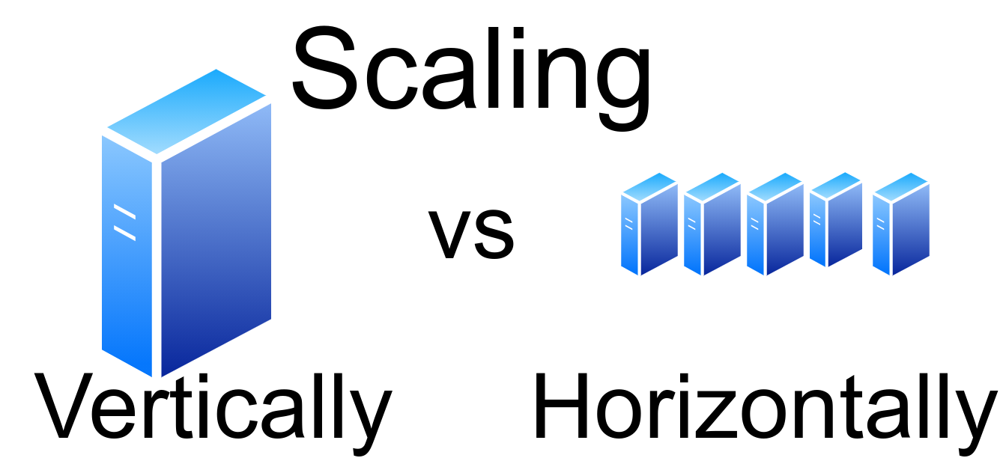
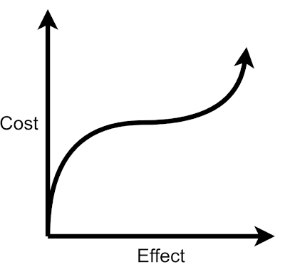

Image by Martin ThomaThe beauty of software development is that almost arbitrarily many people can profit from a developer’s work. Web services such as Facebook or YouTube have several hundred developers, but hundreds of millions of users. However, having many users is not for free. The servers need to do more work. At some point, the machine you started with is not enough.
After reading this article, you will know the difference between scaling vertically and scaling horizontally. Let’s go!
Vertical Scaling: Scaling up💸
The simplest solution when your server struggles is to buy a more powerful one. It might be more RAM, a better CPU, or a better network connection. Maybe even just a bigger hard disk.
Vertical scaling is awesome as long as it works. There are limits in what money can buy you. For example, CPU speed is limited. At some point, you’ve got the best that exists on the market. You might even approach physical limits.
Vertical scaling is an early solution as long as you don’t reach the territory where the limits are:

Vertical scaling is pretty cheap in every respect when you start with a tiny machine. For example, the difference from a Raspberry Pi to a small PC is huge in computational power, but the cost is very small. At some point, improving the power even a tiny bit makes the machine way more expensive. Image by Martin ThomaDatabases are typical examples that are scaled vertically as long as possible.
Horizontal Scaling: Scaling out
Suppose the disk space is your problem. You have a machine that has 8 TB of disk space. Such a disk costs about 180 EUR. You see that you will need 16 TB of disk space in the close future. You could scale vertically and buy a 16 TB disk for maybe 400 EUR. But what will you do when you need 32 TB of disk space?
Instead of buying a single 16 TB disk, you can buy a second 8 TB disk. Then you need to think about how those two disks work together. This means the developers need to invest more time than with the vertical scaling solution.
Vertical scaling is buying a bigger machine, horizontal scaling is buying multiple machines.
You can always buy another machine, but at some point, you cannot buy a bigger machine. Think of aircraft: When you have more passengers, you can go up to a Boeing 747. After that, you need to use multiple airplanes.
A static website is a good example you can scale horizontally without any issues.